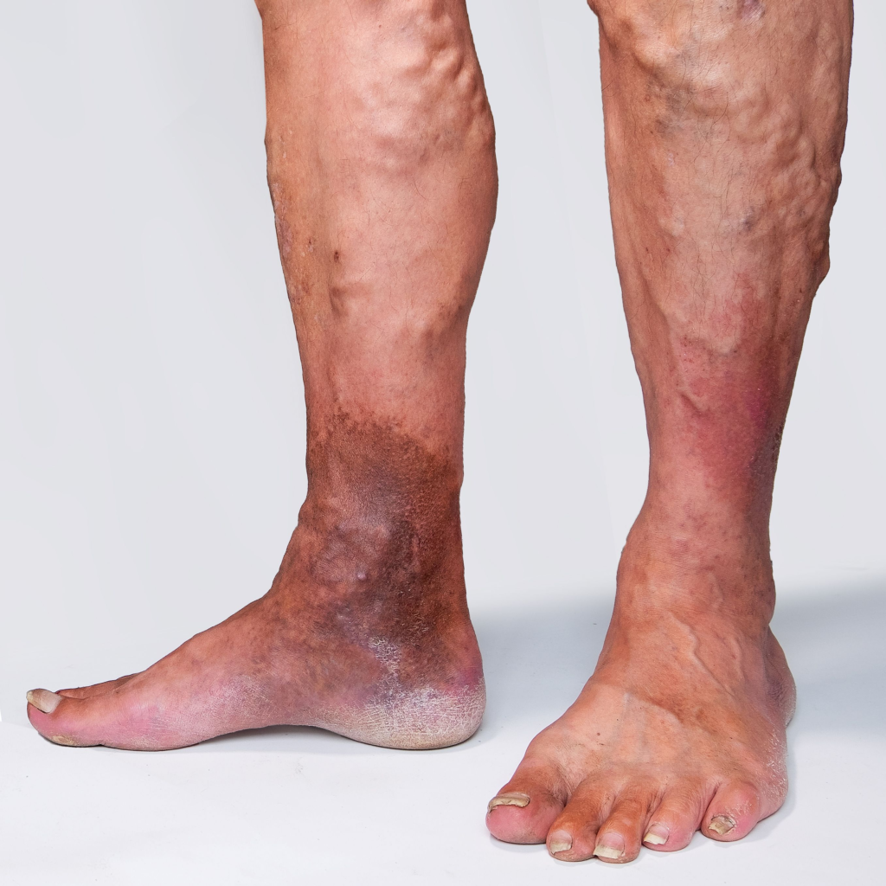

Flu (Influenza)
The flu is a contagious respiratory illness caused by influenza viruses.
Consequences:
- High fever and chills
- Muscle aches and fatigue
- Cough and sore throat
- Complications can include pneumonia
Hypertension (High Blood Pressure)
Hypertension is a condition where the blood pressure in the arteries is persistently elevated.
Consequences:
- Increased risk of heart disease
- Stroke
- Kidney damage
- Vision loss
Asthma
Asthma is a chronic condition in which the airways become inflamed and narrowed.
Consequences:
- Shortness of breath
- Wheezing
- Frequent coughing, especially at night
- Severe asthma attacks can lead to difficulty breathing
Skin Diseases
Eczema
Eczema is a condition that makes the skin red, inflamed, and itchy.
Consequences:
- Severe itching
- Red, inflamed skin
- Cracked or rough patches
- Infection if scratched
Psoriasis
Psoriasis is a chronic skin condition that causes rapid skin cell buildup, resulting in scales and red patches.
Consequences:
- Thick, red patches covered with silvery scales
- Dry, cracked skin that may bleed
- Itching and burning sensations
- Painful, swollen joints (psoriatic arthritis)
Acne
Acne is a skin condition that occurs when hair follicles become clogged with oil and dead skin cells.
Consequences:
- Whiteheads and blackheads
- Pimples and cystic lesions
- Scarring if severe
- Skin discoloration
Rashes
Rashes are localized, painful, and swollen skin lesions caused by a variety of factors.
Consequences:
- Pain, redness, and swelling
- May be caused by infection, allergies, or certain medications
- May be temporary or permanent
Pain Management
Pain management is a crucial aspect of treating and managing common diseases. Here are some strategies for managing pain:
Treatments:
- Medications: Antihistamines, pain relievers, and painkillers
- Physical therapy: Stretching, yoga, and exercise
- Occupational therapy: Assisting with daily activities
- Speech therapy: Improving communication skills
Self-Care:
- Eat a balanced diet rich in fruits, vegetables, whole grains, and lean proteins
- Exercise regularly: Active l
Allergies
Allergies are conditions that cause unusual sensitization of the skin or mucous membranes.
Consequences:
- Sneezing, runny nose, and itchy eyes
- Difficulty breathing or shortness of breath
- Redness, swelling, and pain in the affected area
- May cause allergic reactions to food, medications, or other substances
Cancer
Cancer is a group of diseases characterized by uncontrolled cell growth, usually involving the body's cells called tumors.
Consequences:
- Lifelong damage to the body
- Complications such as cancer-related diseases, such as heart disease, diabetes, and certain types of cancer
- Survival rates are low for people with cancer
Degenerative Diseases
Degenerative diseases are conditions that cause the body's structures to lose their integrity or function.
Consequences:
- Progressive degeneration of tissues, organs, and the body's overall structure
- Complications such as cardiovascular disease, diabetes, and certain types of cancer
- Risk of developing more serious complications later in life
Chronic Diseases
Chronic diseases are conditions that persist for a long period and may not be easily cured.
Consequences:
- Long-term damage to the body's cells and tissues
- Complications such as cancer, heart disease, and certain types of cancer
- Risk of developing more serious complications later in life
Injuries and Illnesses

Injuries and illnesses are permanent damage to the body caused by an accident, trauma, or other causes.
Consequences:
- Lifelong damage to the body
- Complications such as cancer, heart disease, and certain types of cancer
- Risk of developing more serious complications later in life
Mental Health Disorders
Mental health disorders are conditions that affect an individual's mental, emotional, or behavioral functioning.
Consequences:
- Chronic symptoms and difficulties in functioning
- Complications such as depression, anxiety, and other mental health conditions
- Risk of developing more serious complications later in life
Substance Abuse
Substance abuse is the use of substances in excess of their legal or recommended amounts.
Consequences:
- Damage to the body and brain
- Complications such as addiction, depression, and other mental health conditions
- Risk of developing more serious complications later in life